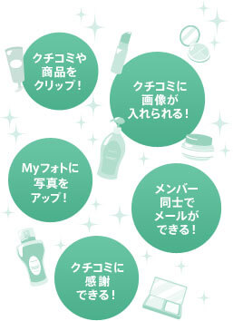
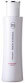

＠ｃｏｓｍｅとは
＠ｃｏｓｍｅ（アットコスメ）は、みなさんに楽しく役に立つ情報を提供するコスメ・美容の総合ポータルサイト。クチコミランキングをチェックしたり、オリジナル商品の企画に参加できたり、スキンケアやメイクの疑問を質問できたり・・・その他にも美容に関するお仕事や、＠ｃｏｓｍｅで話題の商品が買えるお店からのお得な情報など、ビューティについてあらゆる角度からさまざまな情報を提供しています。
＠ｃｏｓｍｅをもっと楽しむために、
まずはメンバー登録からスタート！
ランキング
-
コスメ総合ランキング
最新のクチコミを集計したコスメの総合ランキング。人気のコスメがチェックできます。
-
売れ筋ランキング
お店の売れ筋コスメをランキングでご紹介。あのお店で人気の商品はこちらでチェック！
-
注目アイテム／注目お悩み／効果ランキング
注目されているアイテムカテゴリや、お悩み・効果カテゴリのランキングをご紹介。
-
話題のキーワードランキング
化粧品・コスメ・美容に関するキーワードのランキング。＠ｃｏｓｍｅで話題のキーワードとは？
-
ブランドランキング
クチコミ件数やアクセス数で集計した話題のコスメブランドをランキングでチェックできます。
コイン・ポイント & クーポン
-
おトク de キレイ
あなたのキレイをサポートするおトクが満載の“おトク de キレイ”。お買い物やプレゼント応募にご利用できるビューティコイン、ビューティポイント、クーポンを今すぐチェック！
-
ビューティコイン&ビューティポイント
＠ｃｏｓｍｅメンバーに登録すれば誰でも＠ｃｏｓｍｅの閲覧や対象サービスのご利用でビューティコインが貯まります。
貯めたコインはプレゼントの応募にご利用できたり、ビューティポイントに交換して、コスメ・化粧品通販サイト「＠ｃｏｓｍｅ ｓｈｏｐｐｉｎｇ」や＠ｃｏｓｍｅの店舗「アットコスメストア」でのお買い物にご利用できます。 -
クーポン
＠ｃｏｓｍｅから発行の「＠ｃｏｓｍｅ ｓｈｏｐｐｉｎｇ」「アットコスメストア」でご利用できるおトクなクーポンはこちらで確認できます。
※＠ｃｏｓｍｅプレミアム会員（月額294円[税込]）になれば、おトクなクーポンが毎月発行になります。詳しくはこちらをチェック！
chieco（Q&A）
-
chieco
chieco（チエコ）は美容のQ&Aコミュニティサービスです。
美容の専門家や＠ｃｏｓｍｅメンバーさんが答えてくれるので、あなたの疑問や悩みもきっとすぐに解決しますよ！
ビューティ検索
-
検索
商品やクチコミをはじめ、気になるコスメや美容情報が探せるコスメ・美容の総合検索サイト。知りたかった美容情報が見つかったりと、あなたのキレイがさらに充実します。
スペシャル
-
特集インデックス
コスメや美容に関するとっておきの情報が満載！ オリジナル商品作りなどメンバー参加型企画も。
-
ベストコスメ大賞
2000年〜最新の＠ｃｏｓｍｅベストコスメ大賞を一覧でチェックできます。
-
ビューティニュース
新製品情報をはじめ、＠ｃｏｓｍｅが注目するコスメ・美容情報をお届けします。
-
今月のプレゼント
話題の新製品やクチコミで話題のコスメなどが当たるプレゼント企画。チャンスは月に2回！
-
新製品カレンダー
発売日ごとに新製品をチェックできる便利なカレンダー。情報は随時更新しています。
-
ビューティ診断・占い
キレイになれるヒントがつまった楽しい占いや心理テスト、美容に関する診断コーナー。
-
ビューティ☆レシピ
からだの中からキレイを育てる、カンタンおいしいレシピをご紹介。

例えば・・・
- 気になるアイテムやブランド、クチコミ、メンバーなどを見つけたら、“クリップボタン”や“お気に入り登録ボタン”でブックマーク！ My＠ｃｏｓｍｅから一覧でチェックすることができます。
- お気に入りの写真をMyフォトに登録。その写真をプロフィールやクチコミに載せることができます。
- 一度に複数のメンバーとのメールが可能。写真もあわせて送ることができます。
＠ｃｏｓｍｅメンバーになると、あなたのお気に入りの情報だけをまとめて管理することができるから、
＠ｃｏｓｍｅをもっと便利に、もっと楽しめます♪
＠ｃｏｓｍｅをもっと楽しむために、
まずはメンバー登録からスタート！
注目トピックス
What's New
- スキンケア用品変えるきっかけは？(9/6)UP
- 今売れている化粧水★TOP10(9/5)UP
- 1位★地肌のベタつきやニオイ対策(9/4)
- コスパ最強アイテムをチェック！(9/4)
- 参考になったクチコミ第1位は？(9/3)
もっとみる>>
ブランドファンクラブ限定プレゼント
【毎月 1・9・17・24日 開催！】
(応募受付：9/1〜9/8)
-

鉄分たっぷり100％自然派ジュース【豊潤サジー】 / フィネス現品
フラフラ対策からぷる肌まで。実感率87％ドリンク
-
皮膚科医・吉木伸子先生開発！薬用の美白美容液 / ドクターYサンプル
シミにWでアプローチ！シミをつくらせない美白美容液